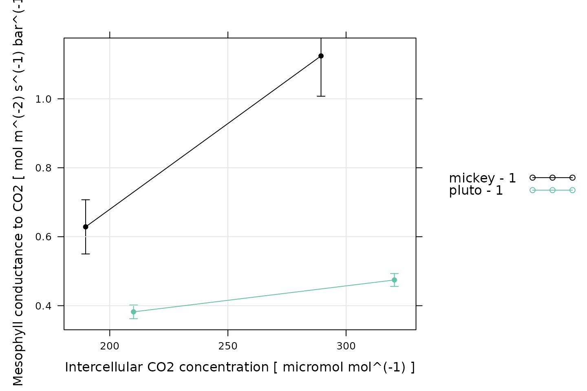

Overview
In this vignette, we will give an example showing how to use combined
gas exchange and isotope discrimination data to estimate values of
mesophyll conductance with the PhotoGEA package. The
commands in this vignette can be used to initialize your own script, as
described in Customizing Your
Script.
Background
Because the process of photosynthesis tends to preferentially assimilate 12C more often than the rarer and heavier stable isotope 13C, carbon isotope discrimination measurements have proven to be incredibly useful in the fields of plant biology and climate science (Evans and Caemmerer 2013). In the context of plant biology, a common approach is to hold a leaf or plant under controlled environmental conditions and measure isotope discrimination; models that predict discrimination can then be used to estimate key parameter values such as the mesophyll conductance to CO2 () in C3 plants or the bundle-sheath leakiness to CO2 () in C4 plants.
In general, this technique requires simultaneous measurements of the net CO2 assimilation rate , the intercellular CO2 concentration , the 12C and 13C concentrations in air before and after flowing over the leaf, and others. To make these measurements, a gas exchange measurement system (such as a Licor Li-6800) is combined with an isotope concentration measurement system, making this a challenging experimental technique. Although several methods are available for measuring the relative concentrations of 12C and 13C gas mixtures, tunable diode laser (TDL) absorption spectroscopy has emerged as one of the most popular due to its high sensitivity and relatively short measurement times (Salesse-Smith, Driever, and Clarke 2022).
Isotope Discrimination Measurements
To understand isotope discrimination, it is helpful to first discuss fractionation. Fractionation is a process where the relative abundance of one isotope differs between the product and the reactant of a chemical reaction. The term fractionation also refers to a measurable quantity defined by where and are the ratios of isotope concentrations in the reactant and product, respectively. In the case of photosynthetic carbon isotope discrimination, is the fractionation of 13C relative to 12C, air is the reactant, plant carbon is the product, and the ratios are given by 13C / 12C. Because photosynthesis assimilates more 12C than 13C, is always smaller than , and is always greater than 1.
The isotope discrimination is related to the isotope fractionation according to So, in the case of photosynthetic carbon isotope discrimination, is always positive (because is always greater than 1). The discrimination can also be expressed in terms of the isotopic composition , which is related to the isotope ratio by : The isotopic compositions can be expressed relative to an international standard, making them the preferred way to express the relative abundance of different isotopes.
During photosynthetic carbon isotope discrimination measurements, it is not typically possible to actually measure for a variety of reasons. Instead, can be measured in the outgoing air from the leaf. Then, it is possible to relate the isotopic compositions of the incoming and outgoing air to and from the leaf ( and , respectively) to . In this case, the full equation for becomes Here, is defined by where and are the 12C concentrations in the incoming and outgoing air.
In summary, the photosynthetic carbon isotope discrimination is an experimentally accessible quantity that reflects the degree of preference for 12C during the process of photosynthesis. For more information about this discrimination and its measurement via TDL, see Ubierna, Holloway-Phillips, and Farquhar (2018).
Isotope Discrimination Calculations
Values of can be predicted from knowledge of the photosynthetic chemical pathway, as first done by Farquhar, O’Leary, and Berry (1982). This approach breaks down photosynthetic carbon assimilation into several steps including diffusion through air and liquid, and the binding of CO2 to RuBP as catalyzed by Rubisco. Each step along the pathway has its own distinct fractionation. It is also necessary to include the release of carbon by photorespiration and day respiration, which also have their own associated fractionations. The entire equation relating to , , and other variables is different for C3 and C4 plants. These equations can also each be written in several different ways depending on assumptions made while deriving them. Due to these complexities, we do not reproduce the equations here. However, they can be found in many places, such as Box A in Ubierna, Holloway-Phillips, and Farquhar (2018).
The most important aspect of these equations is that they can be solved for key parameters such as the mesophyll conductance to CO2 (in C3 plants) or the bundle-sheath leakiness to CO2 (in C4 plants). Then, experimentally-measured values of can be used to calculate values of or . There are many subtelties to these calculations, such as uncertainties in the fractionation values due to photorespiration and day respiration. We will not attempt to discuss them all here, but more information can be found in Busch et al. (2020).
A Note About This Example
Estimating mesophyll conductance from combined gas exchange and TDL
measurements is a complicated process, making this example longer than
most of the other PhotoGEA vignettes. In general, the
analysis follows these steps:
- Separately load the gas exchange and TDL data.
- Pair the data together, making sure that each log point in the gas exchange data can be identified with carbon isotope concentrations in the sample and reference lines as measured by the TDL.
- Calculate photosynthetic carbon isotope discrimination and mesophyll conductance.
For brevity, we will not discuss the types of log files used in this example, but more information can be found in the Analyzing TDL Data and Analyzing C3 A-Ci Curves vignettes.
Loading Packages
As always, the first step is to load the packages we will be using.
In addition to PhotoGEA, we will also use the
lattice package for generating plots.
If the lattice package is not installed on your R setup,
you can install it by typing
install.packages('lattice').
Loading Gas Exchange Data
The PhotoGEA package includes two files representing gas
exchange data that was measured along with the TDL data discussed in the
next section. The data was recorded by Licor Li-6800 instruments and is
stored in Microsoft Excel files. Each file includes two different
CO2_r setpoints (715 ppm and 450 ppm); six logs were
recorded at each setpoint. Although these two files are based on real
data, noise was added since they are unpublished, so these files should
only be used as examples.
The files will be stored on your computer somewhere in your R package
installation directory, and full paths to these files can be obtained
with PhotoGEA_example_file_path:
# Define a vector of paths to the files we wish to load; in this case, we are
# loading example files included with the PhotoGEA package
licor_file_paths <- c(
PhotoGEA_example_file_path('licor_for_gm_site11.xlsx'),
PhotoGEA_example_file_path('licor_for_gm_site13.xlsx')
)(Note: When loading your own files for analysis, it
is not advisable to use PhotoGEA_example_file_path as we
have done here. Instead, file paths can be directly written, or files
can be chosen using an interactive window. See Input Files below for more information.)
To actually read the data in the files and store them in R objects,
we will use the read_gasex_file function from
PhotoGEA. Later, we will need to match the timestamps in
the gas exchange and isotope discrimination data; to make sure the
timestamps are interpreted correctly, we will also specify the time zone
where the measurements were made (US/Central). Since there
are multiple files to read, we will call this function once for each
file using lapply:
# Load each Licor file, storing the result in a list
licor_exdf_list <- lapply(licor_file_paths, function(fpath) {
read_gasex_file(fpath, 'time', posix_options = list(tz = 'US/Central'))
})The result from this command is an R list of “extended data frames”
(abbreviated as exdf objects). The exdf class
is a special data structure defined by the PhotoGEA
package. In many ways, an exdf object is equivalent to a
data frame, with the major difference being that an exdf
object includes the units of each column. For more information, type
?exdf in the R terminal to access the built-in help menu
entry, or check out the Working With Extended Data
Frames vignette.
Later, it will also be necessary to know the “site number” for each
gas exchange system. This refers to the TDL valve numbers corresponding
to the sample and reference lines of each gas exchange instrument. At
UIUC, there is a convention where the sample line valve number is stored
in the Licor log file name. It can be extracted using the
get_sample_valve_from_filename function from the
PhotoGEA package, which also provides a method for
specifying the reference line valve number.
# Get TDL sample and reference valve numbers from the Licor filenames
licor_exdf_list <- lapply(licor_exdf_list, function(exdf_obj) {
get_sample_valve_from_filename(exdf_obj, list(
'13' = 12, # The reference valve is 12 when the sample valve is 13
'11' = 10 # The reference valve is 10 when the sample valve is 11
))
})Generally, it is more convenient to work with a single
exdf object rather than a list of them, so our next step
will be to combine the objects in the list. This action can be
accomplished using the rbind function, which combines
table-like objects by their rows; in other words, it stacks two or more
tables vertically. This action only makes sense if the tables have the
same columns, so before we combine the exdf objects, we
should make sure this is the case.
The PhotoGEA package includes a function called
identify_common_columns that can be used to get the names
of all columns that are present in all of the Licor files. Then, we can
extract just those columns, and then combine the exdf
objects into a single one.
# Get the names of all columns that are present in all of the Licor files
licor_columns_to_keep <- do.call(identify_common_columns, licor_exdf_list)
# Extract just these columns
licor_exdf_list <- lapply(licor_exdf_list, function(x) {
x[ , licor_columns_to_keep, TRUE]
})
# Use `rbind` to combine all the data
licor_data <- do.call(rbind, licor_exdf_list)Now we have a single R object called licor_data that
includes all the data from several Licor Excel files. For more
information about consolidating information from multiple files, see the
Common Patterns section of the Working
With Extended Data Frames vignette.
Loading Tunable Diode Laser Data
The PhotoGEA package includes one file representing TDL
data that was recorded with a Campbell Scientific CR3000 data logger
simultaneously with the gas exchange data discussed in the previous
section. Although this two file is based on real data, noise was added
to it since it is unpublished, so it should only be used as an
example.
The file will be stored on your computer somewhere in your R package
installation directory, and a full path to the file can be obtained with
PhotoGEA_example_file_path:
# Define a vector of paths to the files we wish to load; in this case, we are
# loading example files included with the PhotoGEA package
tdl_file_paths <- c(
PhotoGEA_example_file_path('tdl_for_gm.dat')
)(Note: When loading your own files for analysis, it
is not advisable to use PhotoGEA_example_file_path as we
have done here. Instead, file paths can be directly written, or files
can be chosen using an interactive window. See Input Files below for more information.)
To actually read the data in the files and store them in R objects,
we will use the read_gasex_file function from
PhotoGEA. Later, we will need to match the timestamps in
the gas exchange and isotope discrimination data; to make sure the
timestamps are interpreted correctly, we will also specify the time zone
where the measurements were made (US/Central). Since there
are (potentially) multiple files to read, we will call this function
once for each file using lapply:
# Load each TDL file, storing the result in a list
tdl_exdf_list <- lapply(tdl_file_paths, function(fpath) {
read_gasex_file(fpath, 'TIMESTAMP', posix_options = list(tz = 'US/Central'))
})As before, the result from this command is a list of
exdf objects. (In this case, it is a list with one element.
However, we have written this example in a general way so it will be
able to accomodate multple TDL log files if it is necessary to use more
than one.) Generally, it is more convenient to work with a single
exdf object rather than a list of them, so our next step
will be to combine the objects in the list. This process is the same as
was used in the previous section for the Licor log files.
# Get the names of all columns that are present in all of the TDL files
tdl_columns_to_keep <- do.call(identify_common_columns, tdl_exdf_list)
# Extract just these columns
tdl_exdf_list <- lapply(tdl_exdf_list, function(x) {
x[ , tdl_columns_to_keep, TRUE]
})
# Use `rbind` to combine all the data
tdl_data <- do.call(rbind, tdl_exdf_list)Now we have a single R object called tdl_data that
includes all the data from several TDL data files. For more information
about consolidating information from multiple files, see the Common
Patterns section of the Working
With Extended Data Frames vignette.
Basic Checks of the Gas Exchange Data
Next, we should make sure there is a column in the data whose value
uniquely identifies each related set of measurements. In this particular
data set, several “user constants” were defined while making the
measurements that help to identify each set: machine and
replicate. However, neither of these columns alone are
sufficient to uniquely identify each set. We can solve this issue by
creating a new column that combines the values from each of these:
# Create a new identifier column formatted like `machine - replicate`
licor_data[ , 'curve_identifier'] <-
paste(licor_data[ , 'machine'], licor_data[ , 'replicate'], sep = ' - ')When measuring response curves (or any other type of gas exchange data), it is strongly recommended to record key pieces of metadata in the log files using “user constants,” as was done in this example. For more information, please see the Guide to Licor LI-6800 User Constants, which also includes advice for dealing with data sets that do not contain such metadata.
The next step is to make sure that this column correctly identifies
each response curve. To do this, we can use the
check_response_curve_data function from
PhotoGEA. Here we will supply the name of a column that
should uniquely identify each response curve
(curve_identifier), the expected number of points in each
curve (12), the name of a “driving” column that should
follow the same sequence in each curve (CO2_r_sp). If the
data passes the checks, this function will have no output and will not
produce any messages. (For more information, see the built-in help menu
entry by typing ?check_response_curve_data.)
# Make sure the data meets basic requirements
check_response_curve_data(licor_data, 'curve_identifier', 12, 'CO2_r_sp')However, if check_response_curve_data detects an issue,
it will print a helpful message to the R terminal. For example, if we
had specified the wrong number of points or the wrong identifier column,
we would get error messages:
check_response_curve_data(licor_data, 'curve_identifier', 13)
#> curve_identifier npts
#> 1 mickey - 1 12
#> 2 pluto - 1 12
#> Error in check_response_curve_data(licor_data, "curve_identifier", 13): One or more curves does not have the expected number of points.
check_response_curve_data(licor_data, 'replicate', 12)
#> replicate npts
#> 1 1 24
#> Error in check_response_curve_data(licor_data, "replicate", 12): One or more curves does not have the expected number of points.Now that we have confirmed that our curve identifier properly
identifies sets of data, we can also perform additional organization
using the organize_response_curve_data function from
PhotoGEA:
# Order by `Ci`.
licor_data <- organize_response_curve_data(
licor_data,
'curve_identifier',
c(), # keep all the measured points
'Ci'
)Now there is a new column called seq_num, where each
point in each set is given a number 1-12 corresponding to the
measurement order. The points have also been re-ordered according to
Ci.
Combining the Gas Exchange and Isotope Discrimination Data
Identifying TDL Cycles
Typically a TDL system periodically cycles between multiple gas lines during measurements. Some of the gas lines represent gas mixtures with known composition that can be used for calibration, while others are the “unknown” mixtures whose composition is being measured. A collection of valves are used to control which gas line is being measured at any given time, and the “active” valve for each recorded data point is included in a measurement file.
The first step towards applying calibrations and combining the data
with the associated gas exchange measurements is to identify complete
measurement cycles within the data set. This can be accomplished using
the identify_tdl_cycles function from the
PhotoGEA package. To use this function, we need to know the
following information:
- The name of the column in the TDL data that indicates which valve is being measured.
- The valve number that marks the beginning of a new cycle.
- How many valves are measured in each cycle.
- The name of the column in the TDL data that indicates the time at which each measurement was made.
- The amount of time it should take to cycle through the valves.
This information is usually known beforehand from the settings that
were specified when operating the TDL; alternatively, if it isn’t known
already, it can often be determined by taking a look at the data via
View(tdl_files). Once this information is obtained,
identify_tdl_cycles can be used to automatically assign a
number to each measurement cycle:
# Assign numbers to all full cycles in the TDL data set
tdl_data <- identify_tdl_cycles(
tdl_data,
valve_column_name = 'valve_number',
cycle_start_valve = 20,
expected_cycle_length_minutes = 2.7,
expected_cycle_num_valves = 9,
timestamp_colname = 'TIMESTAMP'
)Now the tdl_data object has two new columns: one is
called cycle_num and specifies each TDL cycle, and the
other is called elapsed_time and indicates the elapsed time
of each TDL log relative to the first one.
Calibrating TDL Cycles
Now that the individual cycles have been identified, the next step is to use the reference valves to calibrate the TDL readings. In general, this procedure will depend strongly on the individual TDL system, since each one may have different types of reference tanks. The data used in this vignette was measured using the TDL in Carl Bernacchi’s lab in the Edward R. Madigan Laboratory at the University of Illinois, Urbana-Champaign. It includes five reference tanks that can be broken into three types:
- One is a certified tank whose total CO2 concentration and carbon isotope ratio are supplied from NOAA.
- One is a nitrogen tank that should have no carbon in it.
- The final type of reference is another CO2 tank whose isotype ratio was measured at UIUC using a different method; this tank is mixed with nitrogen in three different ratios to provide a range of carbon concentrations.
The full procedure for using these references to calibrate the TDL
signal is somewhat complicated. Fortunately, it is easy to determine and
apply the calibrations for a single TDL cycle using the
process_tdl_cycle_erml function from PhotoGEA.
To apply this function to each TDL cycle in a larger data set and then
consolidate the results, we can use it in conjunction with
by and consolidate, which are also part of
PhotoGEA. (For more information about these functions, see
the built-in help menu entries by typing
?process_tdl_cycle_erml, ?by.exdf, or
?consolidate, or check out the Common Patterns
section of the Working
With Extended Data Frames vignette.) As with the previous function,
many of the inputs here (such as
noaa_cylinder_isotope_ratio) must be obtained from whoever
is managing the TDL system being used:
# Use the data from the calibration valves to determine calibrated carbon
# concentrations from all valves in each TDL cycle
processed_tdl <- consolidate(by(
tdl_data,
tdl_data[, 'cycle_num'],
process_tdl_cycle_erml,
valve_column_name = 'valve_number',
noaa_valve = 2,
calibration_0_valve = 20,
calibration_1_valve = 21,
calibration_2_valve = 23,
calibration_3_valve = 26,
raw_12c_colname = 'Conc12C_Avg',
raw_13c_colname = 'Conc13C_Avg',
noaa_cylinder_co2_concentration = 294.996,
noaa_cylinder_isotope_ratio = -8.40,
calibration_isotope_ratio = -11.505
))The output from this function – processed_tdl – is a
list of several exdf objects that include calibrated TDL
readings from each valve and information about the calibration
parameters that were determined while processing the data.
Pairing Gas Exchange and TDL Data
When analyzing combined gas exchange and isotope discrimination data, a key step is to combine TDL and gas exchange data that were measured at the same times. The function performs this operation by locating the TDL cycle whose timestamp is closest to each Licor file entry. Then, the 12C, 13C, total CO2, and C values measured by the TDL from the Licor’s sample and reference lines during that cycle are added to the gas exchange data as new columns.
# Pair the Licor and TDL data by locating the TDL cycle corresponding to each
# Licor measurement
licor_data <- pair_gasex_and_tdl(licor_data, processed_tdl$tdl_data)Qualitative Validation
The data has now undergone several basic validation checks. Now we can make qualitative validation checks by plotting various quantities and looking for any outliers or otherwise strange measurement points. In this section, we will just look at a few of the many possible variables that could be plotted. Other possibilities can be found in some of the other PhotoGEA vignettes, such as Analyzing TDL Data and Analyzing C3 A-Ci Curves.
Environment Control
One type of validation is to make sure that the leaf environment was properly controlled. This could include temperature, humidity, and/or CO2 concentration. As an example, we will first look at the temperature. For these measurements, the leaf temperature was set to 28 degrees C, so it is a good idea to confirm that the leaf temperature was constant during the measurements.
# Plot the leaf temperature, grouped by CO2_r setpoint
xyplot(
TleafCnd ~ seq_num | curve_identifier,
group = CO2_r_sp,
data = licor_data$main_data,
type = 'p',
pch = 16,
auto.key = list(space = 'right'),
grid = TRUE,
ylim = c(26, 30),
xlab = 'Measurement number',
ylab = paste('Leaf temperature', '[', licor_data$units$TleafCnd, ']')
)The temperature control is not perfect for the last point in each curve, but only deviates from the setpoint by 0.5 degrees C. This is an acceptable amount of variation and is not a reason for concern.
We can also look at CO2_r, which should be 715 ppm for
the first six points and 450 ppm for the following points.
# Plot CO2_r, grouped by CO2_r setpoint
xyplot(
CO2_r ~ seq_num | curve_identifier,
group = CO2_r_sp,
data = licor_data$main_data,
type = 'p',
pch = 16,
auto.key = list(space = 'right'),
grid = TRUE,
ylim = c(400, 800),
xlab = 'Measurement number',
ylab = paste('CO2 concentration', '[', licor_data$units$CO2_r, ']')
)Here we can see that the CO2 control was good for all the measurement points.
TDL Readings
A key requisite for reliable mesophyll conductance values is that the TDL readings should be stable with time at each CO2 setpoint. We can check this by looking at the calibrated TDL readings.
xyplot(
Conc13C_Avg ~ elapsed_time,
group = valve_number,
data = processed_tdl$tdl_data$main_data,
auto.key = list(space='right'),
grid = TRUE,
type = 'b',
xlab = paste0('Elapsed time (', processed_tdl$tdl_data$units$elapsed_time, ')'),
ylab = paste0(
'Calibrated TDL 13C concentration (',
processed_tdl$tdl_data$units$Conc13C_Avg, ')'
),
par.settings = list(
superpose.line = list(col = multi_curve_colors()),
superpose.symbol = list(col = multi_curve_colors(), pch = 16)
)
)Here we can see that some of the valves are variable at the start of the TDL log file (such as valves 26 and 23). However, they are quite stable by the time the gas exchange logs begin (at around 25 minutes of elapsed time).
Cleaning the Data
At this point, if any issues had been identified, we could clean the data by removing any problematic points. In this example, this procedure is not required. For examples of how to clean a data set by removing points, please see the Analyzing C3 A-Ci Curves vignette, or one of the other vignettes.
Calculating Isotope Discrimination
Now, the licor_data exdf object includes
the TDL measurements from the Licor sample and reference gas lines that
correspond to each log point. This information can now be used to
calculate
,
the photosynthetic isotope discrimination:
# Calculate isotope discrimination
licor_data <- calculate_isotope_discrimination(licor_data)We can also make a quick validity check here. Photosynthetic carbon isotope discrimination should be not vary too much at each CO2 setpoint. We can check this with a plot.
# Plot the photosynthetic isotope discrimination, grouped by CO2_r setpoint
xyplot(
Delta_obs_tdl ~ seq_num | curve_identifier,
group = CO2_r_sp,
data = licor_data$main_data,
type = 'p',
pch = 16,
auto.key = list(space = 'right'),
grid = TRUE,
ylim = c(16, 22),
xlab = 'Measurement number',
ylab = paste('Photosynthetic isotope discrimination', '[', licor_data$units$Delta_obs_tdl, ']')
)Here there is a large amount of noise, but this is to be expected for these measurements.
Calculating Mesophyll Conductance
Now we have loaded the raw data, combined the two main data sources (gas exchange and TDL measurements), performed some validity checks, and calculated the isotope discrimination values. There are just a few more steps required to calculate mesophyll conductance values. In particular, the mesophyll conductance equations require the following inputs:
- The rate of day respiration ().
- The CO2 compensation point in the absence of day respiration ().
- The ternary correction factor ().
- The observed photosynthetic carbon isotope discrimination under growth conditions ().
The value of day respiration must be known from other measurements; typically it is determined by placing a leaf into a gas exchange measurement chamber with the light off, and measuring the steady-state net assimilation rate. Here we will use 1.2 mol m s.
# Set day respiration rate
licor_data <- set_variable(
licor_data,
'RL',
'micromol m^(-2) s^(-1)',
value = 1.2
)There are several possible approaches to choosing a value for
.
Here we will calculate its value from the leaf temperature and the
Rubisco specificity using the calculate_gamma_star function
from PhotoGEA, using 92 M
M
for the specificity.
# Set Rubisco specificity
licor_data <- set_variable(
licor_data,
'specificity_at_tleaf',
'M / M',
value = 92
)
# Calculate Gamma_star
licor_data <- calculate_gamma_star(licor_data)The ternary correction factor
can be calculated using the calculate_ternary_correction
function from PhotoGEA. This function has a few of its own
requirements, which can be met by first calling
calculate_total_pressure and
calculate_gas_properties.
# Calculate total pressure
licor_data <- calculate_total_pressure(licor_data)
# Calculate gbc, gsc, Csurface
licor_data <- calculate_gas_properties(licor_data)
# Calculate t
licor_data <- calculate_ternary_correction(licor_data)Like
,
the observed photosynthetic isotope discrimination under growth
conditions
()
must be measured from each leaf or plant species. Ideally, this would be
determined by setting the ambient CO2 concentration around
the leaf to the ambient value and using the TDL to measure the
photosynthetic isotope discrimination
.
In this data set, the first six points in each file have
CO2_r set to 715 ppm, which produces a value of
close to 420 ppm (the global atmospheric value at the time these
measurements were made). Thus, we can use the average value of
across the first six points as the value of
for each replicate.
# Set Delta_obs_growth
licor_data <- set_variable(
licor_data,
'Delta_obs_growth',
'ppt',
id_column = 'curve_identifier',
value_table = as.list(tapply(
licor_data[licor_data[, 'CO2_r_sp'] == 715, 'Delta_obs_tdl'],
licor_data[licor_data[, 'CO2_r_sp'] == 715, 'curve_identifier'],
mean
))
)Now we are finally able to calculate values of mesophyll conductance!
# Calculate mesophyll conductance
licor_data <- calculate_gm_busch(licor_data, f = 0)In this example, we have found that the mesophyll conductance values are more reasonable with (the assumed fractionation due to day respiration) set to 0. In general, is typically not zero, and can be varied during analysis.
Examining the Results
One way to view the results is to simply plot each calculated value of the mesophyll conductance.
# Plot the mesophyll conductance values, grouped by CO2_r setpoint
xyplot(
gmc ~ seq_num | curve_identifier,
group = CO2_r_sp,
data = licor_data$main_data,
type = 'p',
pch = 16,
auto.key = list(space = 'right'),
grid = TRUE,
xlab = 'Measurement number',
ylab = paste('Mesophyll conductance to CO2', '[', licor_data$units$gmc, ']')
)Another approach is to plot the average mesophyll conductance against the average for each CO2 setpoint.
# Plot the average mesophyll conductance values against average Ci values,
# grouped by CO2_r setpoint
xyplot_avg_rc(
licor_data[, 'gmc'],
licor_data[, 'Ci'],
licor_data[, 'CO2_r_sp'],
licor_data[, 'curve_identifier'],
type = 'b',
auto = TRUE,
grid = TRUE,
pch = 16,
ylab = paste('Mesophyll conductance to CO2', '[', licor_data$units$gmc, ']'),
xlab = paste('Intercellular CO2 concentration [', licor_data$units$Ci, ']')
)
As usual, the appropriate synthesis operations will depend on the details of the project and how the data will be used.
Customizing Your Script
Note that most of the commands in this vignette have been written in a general way so they can be used as the basis for your own analysis script (see Commands From This Document). In order to use them in your own script, some or all of the following changes may be required. There may also be others not specifically mentioned here.
Input Files
The file paths specified in licor_file_paths and
tdl_file_paths will need to be modified so they point to
your own files. One way to do this in your own script is to simply write
out relative or absolute paths to the files you wish to load. For
example, you could replace the previous definitions with these ones:
# Define a vector of paths to the files we wish to load
licor_file_paths <- c(
'myfile1.xlsx', # `myfile1.xlsx` must be in the current working directory
'C:/documents/myfile2' # This is an absolute path to `myfile2`
)
tdl_file_paths <- c(
'tdl_1.dat', # `tdl_1.dat` must be in the current working directory
'data/tdl_2.dat' # The current working directory must contain a subdirectory
) # called `data` that contains `tdl2.dat`You may also want to consider using the
choose_input_licor_files and
choose_input_tdl_files functions from
PhotoGEA; these functions will create pop-up browser
windows where you can interactively select a set of files. Sometimes
this is more convenient than writing out file paths or names. For
example, you could replace the previous definitions with these ones:
# Interactively define a vector of paths to the files we wish to load
licor_file_paths <- choose_input_licor_files()
tdl_file_paths <- choose_input_tdl_files()Unfortunately, choose_input_licor_files and
choose_input_tdl_files are only available in interactive R
sessions running on Microsoft Windows, but there is also a
platform-independent option: choose_input_files. See the
Translation section of the Developing a
Data Analysis Pipeline vignette for more details.
Mesophyll Conductance Calculations
Sometimes it may not be possible to estimate
.
In this case, set e_star_equation = 19 when calling
calculate_gm_busch or use calculate_gm_ubierna
instead of calculate_gm_busch.
Saving Results
You may want to use write.csv to save some or all of the
results as csv files. For example, the following command
will allow you to interactively choose an output filename for a
csv file containing the combined gas exchange and TDL data,
along with the calculated values of isotope discrimination and mesophyll
conductance:
write.csv(licor_data, file.choose(), row.names = FALSE)Commands From This Document
The following code chunk includes all the central commands used throughout this document. They are compiled here to make them easy to copy/paste into a text file to initialize your own script. Annotation has also been added to clearly indicate the four steps involved in data analysis, as described in the Developing a Data Analysis Pipeline vignette.
###
### PRELIMINARIES:
### Loading packages, defining constants, creating helping functions, etc.
###
# Load required packages
library(PhotoGEA)
library(lattice)
###
### TRANSLATION:
### Creating convenient R objects from raw data files
###
##
## Gas exchange log files
##
## IMPORTANT: When loading your own files, it is not advised to use
## `PhotoGEA_example_file_path` as in the code below. Instead, write out the
## names or use the `choose_input_licor_files` function.
# Define a vector of paths to the files we wish to load; in this case, we are
# loading example files included with the PhotoGEA package
licor_file_paths <- c(
PhotoGEA_example_file_path('licor_for_gm_site11.xlsx'),
PhotoGEA_example_file_path('licor_for_gm_site13.xlsx')
)
# Load each Licor file, storing the result in a list
licor_exdf_list <- lapply(licor_file_paths, function(fpath) {
read_gasex_file(fpath, 'time', posix_options = list(tz = 'US/Central'))
})
# Get TDL sample and reference valve numbers from the Licor filenames
licor_exdf_list <- lapply(licor_exdf_list, function(exdf_obj) {
get_sample_valve_from_filename(exdf_obj, list(
'13' = 12, # The reference valve is 12 when the sample valve is 13
'11' = 10 # The reference valve is 10 when the sample valve is 11
))
})
# Get the names of all columns that are present in all of the Licor files
licor_columns_to_keep <- do.call(identify_common_columns, licor_exdf_list)
# Extract just these columns
licor_exdf_list <- lapply(licor_exdf_list, function(x) {
x[ , licor_columns_to_keep, TRUE]
})
# Use `rbind` to combine all the data
licor_data <- do.call(rbind, licor_exdf_list)
##
## Isotope discrimination log files
##
## IMPORTANT: When loading your own files, it is not advised to use
## `PhotoGEA_example_file_path` as in the code below. Instead, write out the
## names or use the `choose_input_tdl_files` function.
# Define a vector of paths to the files we wish to load; in this case, we are
# loading example files included with the PhotoGEA package
tdl_file_paths <- c(
PhotoGEA_example_file_path('tdl_for_gm.dat')
)
# Load each TDL file, storing the result in a list
tdl_exdf_list <- lapply(tdl_file_paths, function(fpath) {
read_gasex_file(fpath, 'TIMESTAMP', posix_options = list(tz = 'US/Central'))
})
# Get the names of all columns that are present in all of the TDL files
tdl_columns_to_keep <- do.call(identify_common_columns, tdl_exdf_list)
# Extract just these columns
tdl_exdf_list <- lapply(tdl_exdf_list, function(x) {
x[ , tdl_columns_to_keep, TRUE]
})
# Use `rbind` to combine all the data
tdl_data <- do.call(rbind, tdl_exdf_list)
###
### VALIDATION:
### Organizing the data, checking its consistency and quality, cleaning it
###
# Create a new identifier column formatted like `machine - replicate`
licor_data[ , 'curve_identifier'] <-
paste(licor_data[ , 'machine'], licor_data[ , 'replicate'], sep = ' - ')
# Make sure the data meets basic requirements
check_response_curve_data(licor_data, 'curve_identifier', 12, 'CO2_r_sp')
# Order by `Ci`.
licor_data <- organize_response_curve_data(
licor_data,
'curve_identifier',
c(), # keep all the measured points
'Ci'
)
##
## Combining the gas exchange and isotope discrimination data
##
# Assign numbers to all full cycles in the TDL data set
tdl_data <- identify_tdl_cycles(
tdl_data,
valve_column_name = 'valve_number',
cycle_start_valve = 20,
expected_cycle_length_minutes = 2.7,
expected_cycle_num_valves = 9,
timestamp_colname = 'TIMESTAMP'
)
# Use the data from the calibration valves to determine calibrated carbon
# concentrations from all valves in each TDL cycle
processed_tdl <- consolidate(by(
tdl_data,
tdl_data[, 'cycle_num'],
process_tdl_cycle_erml,
valve_column_name = 'valve_number',
noaa_valve = 2,
calibration_0_valve = 20,
calibration_1_valve = 21,
calibration_2_valve = 23,
calibration_3_valve = 26,
raw_12c_colname = 'Conc12C_Avg',
raw_13c_colname = 'Conc13C_Avg',
noaa_cylinder_co2_concentration = 294.996,
noaa_cylinder_isotope_ratio = -8.40,
calibration_isotope_ratio = -11.505
))
# Pair the Licor and TDL data by locating the TDL cycle corresponding to each
# Licor measurement
licor_data <- pair_gasex_and_tdl(licor_data, processed_tdl$tdl_data)
##
## Qualitative validation
##
# Plot the leaf temperature, grouped by CO2_r setpoint
xyplot(
TleafCnd ~ seq_num | curve_identifier,
group = CO2_r_sp,
data = licor_data$main_data,
type = 'p',
pch = 16,
auto.key = list(space = 'right'),
grid = TRUE,
ylim = c(26, 30),
xlab = 'Measurement number',
ylab = paste('Leaf temperature', '[', licor_data$units$TleafCnd, ']')
)
# Plot CO2_r, grouped by CO2_r setpoint
xyplot(
CO2_r ~ seq_num | curve_identifier,
group = CO2_r_sp,
data = licor_data$main_data,
type = 'p',
pch = 16,
auto.key = list(space = 'right'),
grid = TRUE,
ylim = c(400, 800),
xlab = 'Measurement number',
ylab = paste('CO2 concentration', '[', licor_data$units$CO2_r, ']')
)
xyplot(
Conc13C_Avg ~ elapsed_time,
group = valve_number,
data = processed_tdl$tdl_data$main_data,
auto.key = list(space='right'),
grid = TRUE,
type = 'b',
xlab = paste0('Elapsed time (', processed_tdl$tdl_data$units$elapsed_time, ')'),
ylab = paste0(
'Calibrated TDL 13C concentration (',
processed_tdl$tdl_data$units$Conc13C_Avg, ')'
),
par.settings = list(
superpose.line = list(col = multi_curve_colors()),
superpose.symbol = list(col = multi_curve_colors(), pch = 16)
)
)
###
### PROCESSING:
### Extracting new pieces of information from the data
###
# Calculate isotope discrimination
licor_data <- calculate_isotope_discrimination(licor_data)
# Plot the photosynthetic isotope discrimination, grouped by CO2_r setpoint
xyplot(
Delta_obs_tdl ~ seq_num | curve_identifier,
group = CO2_r_sp,
data = licor_data$main_data,
type = 'p',
pch = 16,
auto.key = list(space = 'right'),
grid = TRUE,
ylim = c(16, 22),
xlab = 'Measurement number',
ylab = paste('Photosynthetic isotope discrimination', '[', licor_data$units$Delta_obs_tdl, ']')
)
# Set day respiration rate
licor_data <- set_variable(
licor_data,
'RL',
'micromol m^(-2) s^(-1)',
value = 1.2
)
# Set Rubisco specificity
licor_data <- set_variable(
licor_data,
'specificity_at_tleaf',
'M / M',
value = 92
)
# Calculate Gamma_star
licor_data <- calculate_gamma_star(licor_data)
# Calculate total pressure
licor_data <- calculate_total_pressure(licor_data)
# Calculate gbc, gsc, Csurface
licor_data <- calculate_gas_properties(licor_data)
# Calculate t
licor_data <- calculate_ternary_correction(licor_data)
# Set Delta_obs_growth
licor_data <- set_variable(
licor_data,
'Delta_obs_growth',
'ppt',
id_column = 'curve_identifier',
value_table = as.list(tapply(
licor_data[licor_data[, 'CO2_r_sp'] == 715, 'Delta_obs_tdl'],
licor_data[licor_data[, 'CO2_r_sp'] == 715, 'curve_identifier'],
mean
))
)
###
### SYNTHESIS:
### Using plots and statistics to help draw conclusions from the data
###
# Plot the mesophyll conductance values, grouped by CO2_r setpoint
xyplot(
gmc ~ seq_num | curve_identifier,
group = CO2_r_sp,
data = licor_data$main_data,
type = 'p',
pch = 16,
auto.key = list(space = 'right'),
grid = TRUE,
xlab = 'Measurement number',
ylab = paste('Mesophyll conductance to CO2', '[', licor_data$units$gmc, ']')
)
# Plot the average mesophyll conductance values against average Ci values,
# grouped by CO2_r setpoint
xyplot_avg_rc(
licor_data[, 'gmc'],
licor_data[, 'Ci'],
licor_data[, 'CO2_r_sp'],
licor_data[, 'curve_identifier'],
type = 'b',
auto = TRUE,
grid = TRUE,
pch = 16,
ylab = paste('Mesophyll conductance to CO2', '[', licor_data$units$gmc, ']'),
xlab = paste('Intercellular CO2 concentration [', licor_data$units$Ci, ']')
)